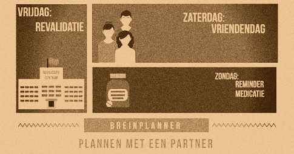
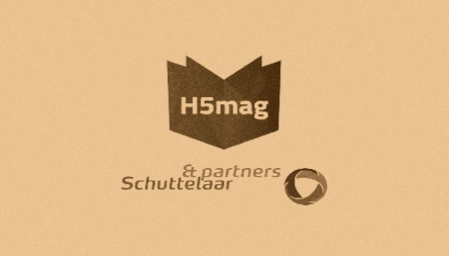

Yannick Kok
Portfolio
Breaking news: Student CMD op zoek naar front end stage
Ik ben Yannick Kok en dit is mijn portfoliowebsite. Op mijn portfoliowebsite vind je informatie over mij, mijn projecten en waar ik naar op zoek ben.
Ik ben momenteel vierdejaars student Communication & Multimedia Design aan de Haagse Hogeschool.
Mijn focus ligt op Front End webdesign. Dat betekent dat ik ervaring heb met HTML, CSS, Javascript en PHP. Ik zoek momenteel een stageplek die bij mijn focus aansluit.
Ik ben iemand die continu op zoek is naar nieuwe interessante informatie.
Je zou kunnen zeggen dat ik nieuwsgierig ben. Ik ben altijd op de hoogte van het laatste nieuws,
bijvoorbeeld algemeen nieuws uit Nederland of uit het buitenland. Maar bijvoorbeeld ook op het gebied van computer hardware, internetcultuur of auto's.
Om op de hoogte te blijven van dit soort onderwerpen moet ik regelmatig veel informatie absorberen.
Dit doe ik door veel te lezen. Bijvoorbeeld op de websites van de NOS, Tweakers of Top Gear.
Soms lees ik te veel, bijvoorbeeld omdat ik eigenlijk alleen iets op moet zoeken maar ik dan uiteindelijk meer dingen over dat onderwerp wil leren.
Dan begin ik met lezen over onderwerp A en dan eindig ik een aantal uur later bij onderwerp Z.
Mijn passie ligt bij het maken van functionele ontwerpen waarvan gebruikers vinden dat het goed werkt.
Ook vind ik het heerlijk om in teams te werken. In teams probeer ik altijd om een project in goede banen te leiden.
Als ik in een team werk dan ben ik iemand die heel goed kan "remmen". Ik ontdek en kaart aan waar problemen zijn die opgelost moeten worden voordat er verder kan worden gegaan.
In mijn vrije tijd ben ik veel bezig met lezen, geschiedenis en design. Ik heb dit op visuele wijze verwerkt in mijn portfolio, omdat ik die ouderwetse esthetiek wel kan waarderen.

Projectoverzicht

Robothond Dog-E
Het doel van dit project was om een "Artificial creature" te bouwen. Dit project werd gemaakt in teamverband. Als team hadden we besloten om een robothond te bouwen waarmee je op erg simpele wijze interactie kon hebben. Ik werkte zelf grotendeels aan de code die deze interactie mogelijk maakte.
Lees verder →
Bekijk project website →
Babbelbank
De babbelbank is een concept wat is ontstaan naar aanleiding van de corona pandemie. Toen in begin 2020 namelijk het virus Nederland bereikte was ik bezig met het vak "Service Design". De ontwerpvraag was simpel: Kom met een volledig offline concept waarmee je de eenzaamheid die mensen ervaren tijdens de corona crisis vermindert.
Het doel was dus om met een concept te komen waardoor mensen op een veilige manier toch sociaal konden zijn.
Uiteindelijk kwam de Babbelbank als beste concept naar voren.
Lees verder →

Breinplanner
De breinplanner was een hi-fi prototype wat is ontwikkeld voor een specifieke doelgroep: Mensen met hersenschade.
Door het gehele CMD proces (onderzoek, conceptualisatie, design en prototyping) te doorlopen kwamen we uiteindelijk uit op de breinplanner, een prototype voor een applicatie waarmee mensen met hersenschade beter kunnen plannen.
Een van de specifieke problemen die mensen met hersenschade ervaren is namelijk dat ze maar beperkte tijd hebben op een dag waarin ze productief kunnen zijn.
Door specifieke functies en visuele stijl te geven aan het prototype konden we deze doelgroep goed helpen.
Lees verder →
H5mag Stage
Van september 2019 tot en met januari 2020 liep ik stage bij H5mag.
H5mag is een bedrijf wat software-as-a-service aanbiedt, namelijk het gelijknamige H5mag.
Met die software kun je online tijdschriften in elkaar zetten en publiceren.
Ik werkte tijdens 20 weken aan mijn programmeer vaardigheden. Het ging voornamelijk om PHP, waarmee ik werkte aan een feedbackmodule.
H5mag had namelijk feedback gekregen van een aantal van haar gebruikers dat ze graag in de tijdschriften zelf feedback konden gaan vragen.
Voorheen werden er namelijk tijdschriften gemaakt maar er kon maar weinig feedback uitgewisseld worden, naast de simpele data zoals bezoekersaantallen.
Lees verder →

Stichting Batterij
Stichting batterij is een stichting met als doel het aantal batterijen wat ingeleverd wordt voor recyclen te verhogen.
Tijdens dit project was het dan ook aan ons om voor een specifieke doelgroep een marketingcampagne op te zetten waarmee we die doelgroep probeerden aan te spreken om meer batterijen te recyclen.
De doelgroep was studenten en jongvolwassenen, ongeveer van 18 tot en met 30 jaar oud.
Om deze doelgroep aan te spreken kwam ik met het volgende idee: Laat zien waar batterijen momenteel allemaal voor gebruikt worden. Batterijen zitten in meer voorwerpen dan je zou denken. Vooral studenten zijn tegenwoordig bijna verslaafd aan hun smartphone of laptop.
Uiteindelijk heb ik een satirisch filmpje daarover gemaakt.
Lees verder →
SpaceX Code
In het tweede jaar van de CMD opleiding maak je een aantal creatieve codeer opdrachten.
Voor ons jaar betekende dat dat je een aantal dashboards maakte met SpaceX als thema.
In totaal maakte ik drie opdrachten. Het eerste dashboard ging ervan uit dat je het zou bekijken onderweg naar een andere planeet.
Dashboard 1 →
Als je eenmaal op de planeet van bestemming bent aangekomen, is het wel fijn als je af en toe kunt communiceren met de mensen thuis die nog op aarde wonen.
Dashboard 2 →
Ten slotte is het ook weer tijd om terug te gaan. Dashboard drie moet je helpen om weer succesvol op de aarde te landen.
Dashboard 3 →
Lees verder →
Colofon
Opgericht: 13 Januari 2021
Gebruikte designtool: Axure
Gerealiseerd in: HTML & CSS
Gebruikte lettertypes: Georgia & Courier New
Ontworpen door: Yannick Kok
Gehost op: Github pages
Sudoku
Horoscoop
Mijn passie ligt bij het bouwen. Of het nou websites of apps zijn of meer fysieke objecten zoals een robothond, ik vind het allemaal leuk.
Het maken van de robothond tijdens het HCI project vond ik een leuke ervaring.
Ik hoop dan ook dat ik in de toekomst nog veel meer leuke dingen kan gaan bouwen, bijvoorbeeld bij mijn afstudeeropdracht of wanneer ik aan het werk ga.
Contactformulier
Heb jij na het zien van mijn website zin om samen iets te gaan bouwen? Aarzel dan niet om contact op te nemen. Vertel bijvoorbeeld over het project waar we aan gaan werken of vraag naar mijn beschikbaarheid of CV.